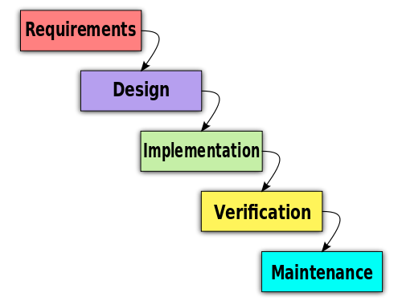

Difficulty: medium
Size: M
What is a waterfall model (vesiputousmalli)?
 Source: https://commons.wikimedia.org/wiki/File:Waterfall_model_%281%29.svg
Write your own answer based on your own perception, possible experience and the material that you will find. Length: aprx. 200 words.
Submit your answer.